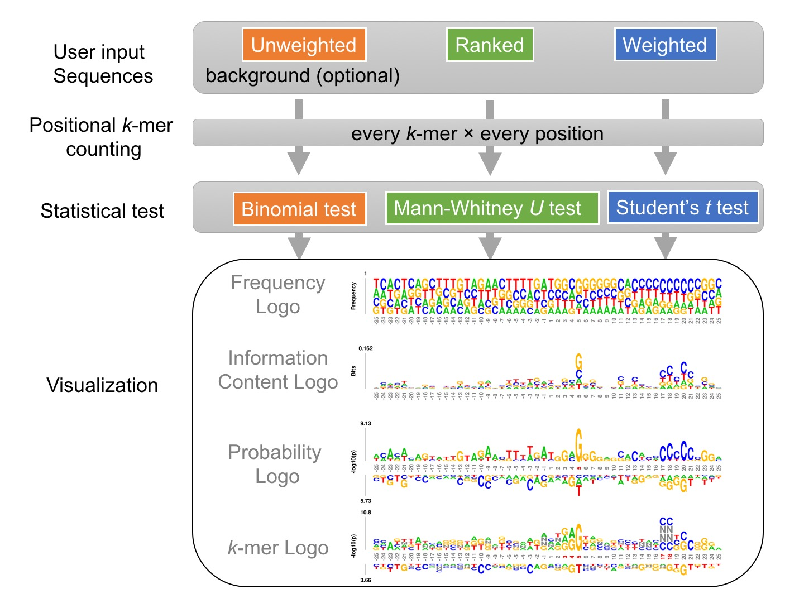

Given a set of sequences of identical length, either unweighted, weighted, or ranked, kpLogo enumerates all possible k-mers of user-specified lengths, evaluates their presence at each position in all input sequences, and reports their enrichment and depletion at each position as determined using an appropriate statistical model. To visualize the results, kpLogo generates a new type of logo plot called the k-mer logo, in which at each position the most significant k-mer is plotted vertically with the total height scaled to its P value (log10 transformed) or test statistics, as appropriate. In addition to k-mer logo, kpLogo also generates logo plots for monomer frequency and information content.
The diagram below highlights two overlapping CNNC motifs at position 17 or 18 that are important for human microRNA processing (see Examples):

Cite:
Xuebing Wu and David Bartel (2017) kpLogo: positional k-mer analysis reveals hidden specificity in biological sequences, see preprint in bioRxiv.
Copyright (c) 2017 Xuebing Wu